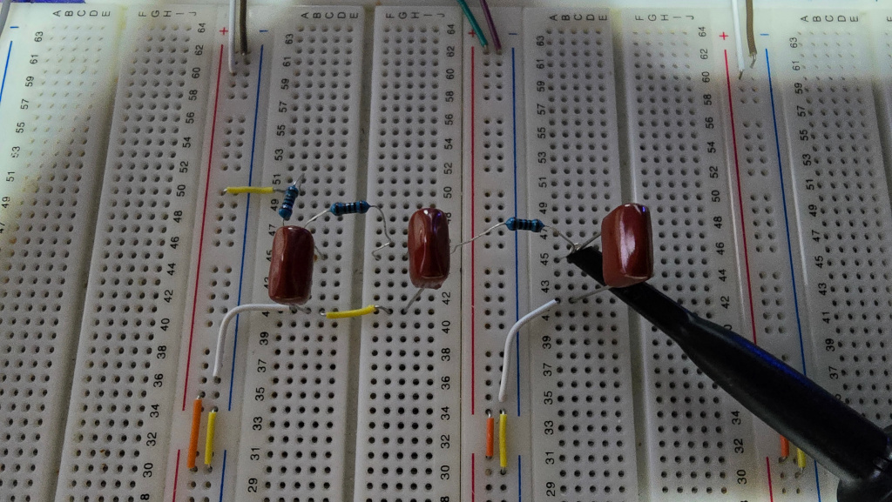

RC passive lowpass filter
Description
The goal is to implement, analyze and do practical measurements on a RC lowpass filter.
Goals
- [x] Document schematic in Kicad
- [x] Do a theoretical analyis
- [x] Calculate 1st order
- [x] Implement schematic on breadboard
- [x] Test circuit and do measurements
- [ ] Calculate 2nd order
Equipment used
| Equipment | Description |
|---|---|
| Peaktech 4055 | AC power supply |
| RS Pro RSDS 1204X-E | Oscilloscope |
Components
| Reference | Value | Remarks |
|---|---|---|
| 3x capacitor | 22n | |
| 3x resistor | 1k | |
| J1 | ~5V |
Formulas
Reactance for the capacitor at frequency.
Impedance for the circuit.
Output frequency can be found with this formula.
Gain is calculated with this formula.
Phase shift formula.
Circuits
Circuits for 1st to 5th order.

Schematics generated from KIcad. The schematics can be downloaded from the repository.
Simulations
Gain for 1st to 5th order filter

Phase for 1st to 5th order filter

Simulation values
| Order | -3db | -20db | -40db |
|---|---|---|---|
| 1 | 7.19KHz | 71.9KHz | Not measureable |
| 2 | 2.69KHz | 19.2KHz | 71.2KHz |
| 3 | 1.40KHz | 9.82KHz | 30.2KHz |
| 4 | 852Hz | 6.12KHz | 18.2KHz |
| 5 | 575Hz | 4.10KHz | 12.3KHz |
Calculations
Assuming input voltage 5V
| Gain | Voltage |
|---|---|
| -3db | 3.53V |
| -10db | 1.58V |
| -20db | 0.5V |
| -40db | 0.25V |
| Frequency | Gain 1st order | Phase 1st order |
|---|---|---|
| 100Hz | -829u | -0.79 |
| 500Hz | -0.02 | -3.95 |
| 1kHz | -0.08 | -7.87 |
| 10kHz | -4.64 | -54.1 |
| 20kHz | -9.36 | -70.1 |
Practical measurements
Oscilloscope measurement

Since the resistor and capacitor are not perfect values and the oscilloscope/function generator is not calibrated values should be a bit off.
| Frequency | Gain 1st order | Gain 2nd order | Gain 3rd order |
|---|---|---|---|
| 100Hz | 0(5V) | 0(5V) | 0(5V) |
| 500Hz | 0(5V) | 0(5V) | -0.72(4.64V) |
| 1kHz | -0.13(4.96V) | -0.57(4.72V) | -1.84(4.08V) |
| 10kHz | -4.62(2.96V) | -12.5(1.2V) | -20.24(0.49V) |
| 20kHz | -9.43(1.72V) | -20.24(0.49V) | -30.9(0.14V) |
Breadboard setup for 3rd order
